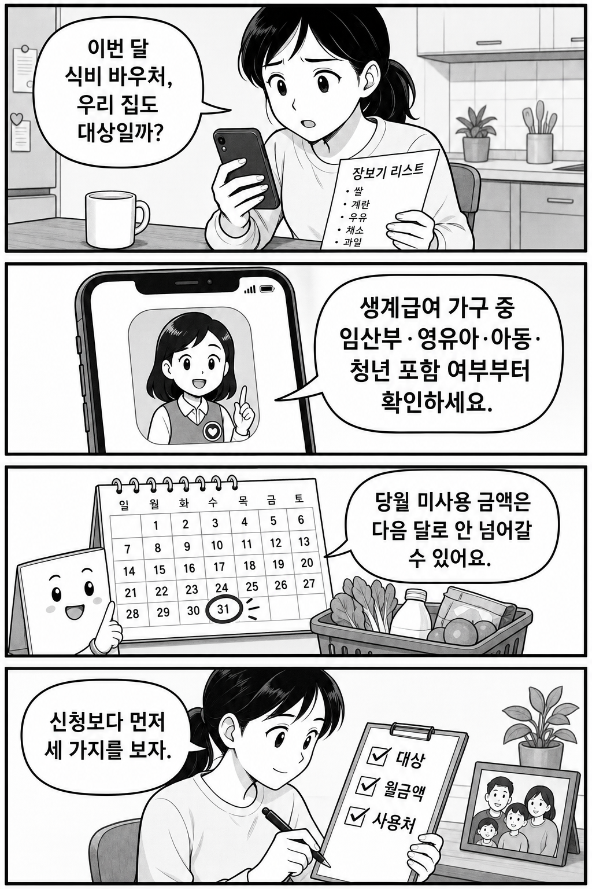
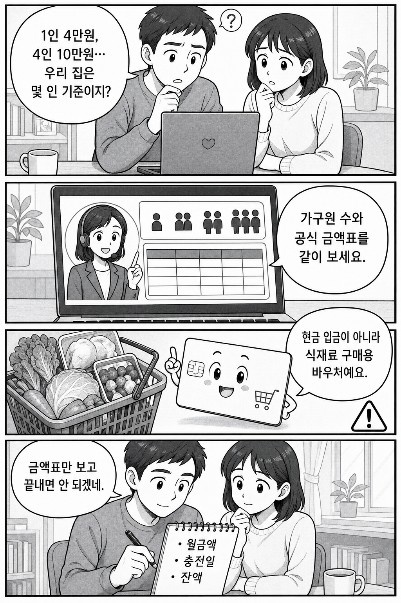

결론부터 말하면, 2026 농식품바우처는 신청 버튼을 누르기 전에 세 가지를 먼저 봐야 합니다. 우리 집이 대상인지, 월 지원금이 얼마인지, 어디서 어떤 품목에 쓸 수 있는지입니다.
이유는 단순합니다. 공식 안내상 지원금은 당월 말일까지 사용 가능하고, 미사용 시 소멸될 수 있습니다. 단 잔액이 지원금액의 10% 미만인 경우 등 예외도 있으니 “받으면 천천히 쓰면 되겠지”라고 넘기면 손해가 날 수 있습니다.

농식품바우처는 모든 저소득 가구가 자동으로 받는 제도가 아닙니다. 공식 안내는 생계급여 수급가구 중에서도 임산부, 영유아, 아동, 청년 포함가구를 기준으로 설명합니다. 또 일부 미시행 지자체나 전입 상황에 따라 사용 가능 여부가 달라질 수 있습니다.
그래서 첫 화면에서 해야 할 일은 “신청 가능”이라는 말만 보는 것이 아니라, 내 주소지와 가구 구성, 생계급여 자격, 포함가구 조건을 같이 맞춰보는 것입니다.
지원금액표는 중요하지만, 금액만 보면 오해가 생깁니다. 예를 들어 1인은 40,000원, 4인은 100,000원처럼 가구원 수별 금액이 다릅니다. 여기에 충전일, 잔액, 사용 가능 지역과 품목까지 붙습니다.

공식 지원품목은 국산 과일류, 채소류, 흰우유, 신선알류, 육류, 잡곡류, 두부류, 임산물 등으로 안내됩니다. 이외 품목 구매는 제한됩니다. 실제 결제 전에는 공식 사용처와 구매가능품목 페이지를 다시 확인하는 편이 안전합니다.
공식 신청 안내에는 방문신청, 전화신청, 온라인 신청 경로가 정리되어 있습니다. 방문신청은 주소지 관할 읍·면·동 행정복지센터, 전화신청은 고객지원센터 안내를 따릅니다. 외국인 가구원이 있는 경우처럼 추가 서류가 필요한 사례는 방문신청 조건이 붙을 수 있습니다.
온라인 신청을 하더라도 신분증, 농식품바우처 신청서, 등본·가족관계증명서, 임산부 진단서·확인서 등 필요한 서류가 달라질 수 있습니다. “온라인이면 서류가 필요 없겠지”가 아니라, 내 상황에 맞는 준비서류를 먼저 확인해야 합니다.
이 글은 신청을 대행하거나 선정 가능성을 보장하지 않습니다. 자격, 주소지, 가구원 수, 세부 서류는 바뀔 수 있으니 제출 직전에는 반드시 공식 페이지를 다시 확인하세요.